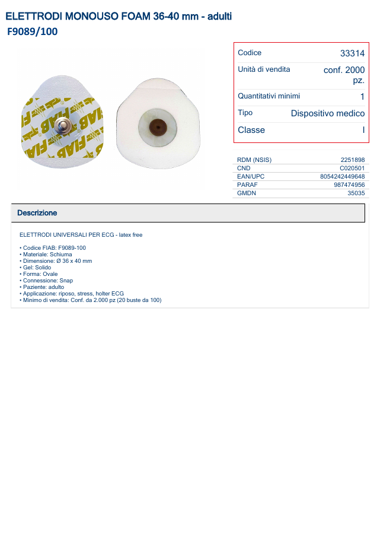
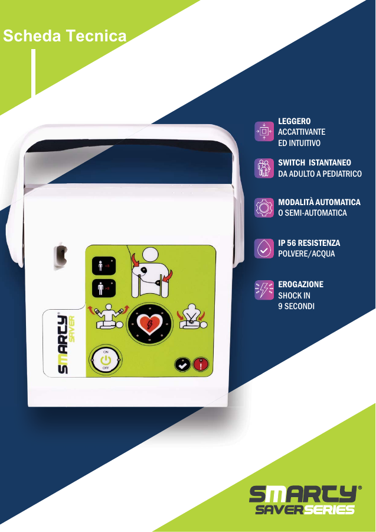

PDF · 15 PAGINE
PDF · 15 PAGINESANIFICAZIONE
SanificaAria Beghelli uvOxy®
Riferimento: SanificaAria uvOxy
Gamma di sanificatori d’aria con tecnologia UV-C a camera chiusa. Consulta la brochure per modelli e caratteristiche.
Prezzo su richiesta
IN VETRINA · BIANCA MEDICAL
Le proposte Bianca Medical per la tua struttura. Consulta le schede PDF e richiedi un’offerta per il prodotto di tuo interesse.
Scopri le proposteQuattro proposte, con tutti i dettagli nelle schede allegate.
PDF · 15 PAGINESANIFICAZIONE
Riferimento: SanificaAria uvOxy
Gamma di sanificatori d’aria con tecnologia UV-C a camera chiusa. Consulta la brochure per modelli e caratteristiche.
Prezzo su richiesta
 PDF · 1 PAGINA
PDF · 1 PAGINAASPIRAZIONE
Riferimento: 28190
Aspiratore portatile con alimentazione a batteria, rete o 12 V. Portata indicata nella scheda tecnica: 36 l/min.
Prezzo su richiesta

PDF · 1 PAGINACARDIOLOGIA
Riferimento: 33314
Elettrodi in foam per adulti, 36 × 40 mm, con connessione snap. Confezione da 2.000 pezzi.
Prezzo su richiesta

PDF · 2 PAGINEEMERGENZA
Riferimento: SM1 / SM2
Modelli semiautomatico e automatico, con selettore adulto/pediatrico. Consulta la scheda tecnica della gamma SMARTY Saver Series.
Prezzo su richiesta